TeamPCP (derived tooling)high
Miasma: valid SLSA provenance for malicious packages
Thirty-two Red Hat npm packages were published with malicious payloads — carrying valid SLSA provenance attestations. The technology built to guarantee build integrity certified the malware, because SLSA attests where a package was built, not whether the build's input was legitimate.

- 1 June 2026, ~10:53–13:46 UTCThe malicious commits
land on the RedHatInsights GitHub repositories.
- 1 June 2026, ~13:00 UTCThe revocation
npm pulls most of the malicious versions.
- 1 June 2026, 18:50 UTCThe bulletin
Red Hat publishes RHSB-2026-006 as Wiz Research goes public.
- 4 June 2026The second wave
Wiz documents a different technique based on
binding.gyp.
The origin
On 1 June 2026, between roughly 10:53 and 13:46 UTC, malicious commits landed on Red Hat's RedHatInsights repositories. By 13:00 UTC npm had revoked most of the malicious versions. By 18:50 UTC Red Hat had published security bulletin RHSB-2026-006, and Wiz Research had gone public.
Under three hours from compromise to disclosure. As incident response goes, that's fast.
The scope: the @redhat-cloud-services npm namespace — frontend JavaScript libraries for the Hybrid Cloud Console. At least 32 distinct packages, 90-plus malicious versions, roughly 80,000 downloads a week according to Wiz. On 4 June, Wiz published a follow-up advisory on a second wave using a binding.gyp technique.
Red Hat's own framing deserves to be quoted accurately, because it's less alarming than the headline suggests: the packages don't touch managed cloud services (ARO, OSD, ROSA, ACS Cloud, AAP Managed), no customer action is required, and no product build included the compromised versions. At the time of writing the bulletin's status remains "Ongoing".
@redhat-cloud-services namespace, according to WizThe attack chain
- A Red Hat employee's GitHub account is compromised. How, exactly, has never been publicly confirmed by Red Hat or Wiz — a gap worth stating plainly rather than filling with speculation.
- The account pushes orphan commits to temporary branches, bypassing code review entirely.
- Those commits introduce a minimal GitHub Actions workflow requesting an OIDC token (
id-token: write) and publishing to npm. - Because the publish happens through a legitimate CI workflow with a legitimate OIDC token, npm issues valid SLSA provenance attestations for the malicious packages.
- The payload —
preinstall/index.js, heavily obfuscated witheval()and ROT encoding — harvests cloud credentials, with new emphasis on GCP and Azure identities reachable from the infected machine, plus CI/CD secrets.
The recycled malware
The payload derives from the "(Mini) Shai-Hulud" family, which the group tracked as TeamPCP released as open source. A second actor picked it up, swapped the cosmetics — Dune references out, Greek mythology in, repos created with the description "Miasma: The Spreading Blight" — and shipped it.
This matters beyond trivia. When malware becomes a public toolkit, attribution stops being a reliable signal. The code tells you nothing about who ran it.
Detection
- Repository description created by the attacker:
"Miasma: The Spreading Blight" - User agent used for GCP queries:
google-api-nodejs-client/7.0.0 gl-node/20.11.0 gccl/7.0.0 - The full list of 32+ malicious versions is published by both Wiz and Red Hat — use theirs, it's authoritative
- Orphan commits on temporary branches in repositories that normally require review
- Any GitHub Actions workflow requesting
id-token: writethat you didn't put there
A caveat on the technical detail: the two main reports — Wiz and StepSecurity — diverge on obfuscation specifics and payload capabilities. Treat the fine-grained technical claims as evolving rather than settled.
Remediation
- Malicious versions are already revoked and removed from npm by Red Hat
- Audit developer workstations, CI/CD environments and repositories for signs of compromise
- Rotate precautionarily: GitHub tokens, SSH keys, cloud credentials, CI/CD secrets. If a payload spent even minutes harvesting, assume it succeeded
- Adopt SBOM, package allowlisting, and hardened pipeline monitoring
- Require review on all branches — including the ones nobody uses
What it teaches
The malicious packages carried valid SLSA provenance attestations. Sit with that.
SLSA exists to guarantee supply chain integrity. It's the answer the industry built after years of npm incidents. And it worked exactly as designed — which is the problem. SLSA certifies where a package was built and that the build wasn't tampered with in transit. It says nothing about whether the input to that build was legitimate.
The attacker didn't break SLSA. They fed it poison through the front door and received a certificate of authenticity in return. A consumer verifying provenance would have seen a green check: built by Red Hat's CI, from Red Hat's repo, with a valid attestation. All true. All useless.
This is the most important and least understood distinction in supply chain security: provenance is not integrity of intent. Knowing where something came from tells you nothing about whether it should exist.
Every organisation that has ticked "we verify provenance" as a supply chain control should read RHSB-2026-006 and ask what, precisely, that check was buying them.